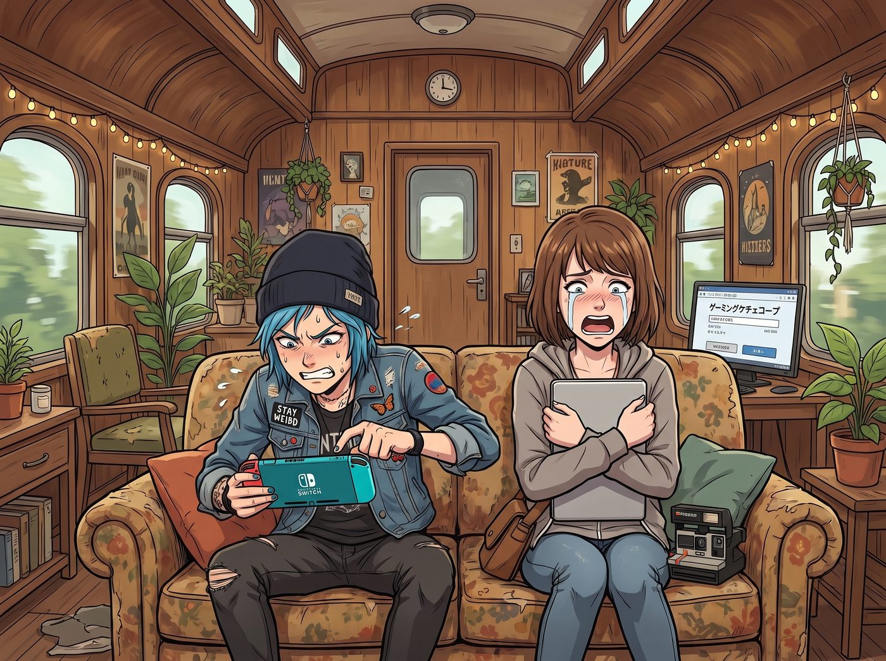

舉手之勞

二號車廂的午後，沒有聯邦特工的追殺，也沒有華爾街的資本絞殺，只有碳基生物為了娛樂需求而發出的無能狂怒。
一、跨區支付的賽博嘆息之牆
沙發上，Chloe 正煩躁地狂按著那台當初為了貪便宜而從二手市場淘來的日版遊戲機。
「這到底是什麼弱智的支付閘道？！」Chloe 暴躁地把手把扔在墊子上，「老娘只是想買個美版無刪減、血肉橫飛的恐怖遊戲，結果這破機器居然因為我的美國信用卡和日版主機的區域衝突，死活給我彈出支付被拒！難道讓我拿著武士刀去砍喪屍嗎？！」
而在她旁邊，Max 正抱著筆記型電腦，看著某個日本數位遊戲平台的結帳頁面，發出了一聲同樣絕望的哀嚎。
「我也被卡住了……」Max 痛苦地捂住臉，「這個新出的日本百合視覺小說，就因為標籤裡帶了一點點成人色色元素，直接觸發了美國信用卡的海外風控審查。系統提示我不符合當地的分級購買法規。這簡直是對藝術的閹割！」
在這個連核反應爐都能搞定的車廂裡，兩個大頭蝦卻被區區幾十美金的跨國遊戲支付牆給死死擋住了。
二、頂級風控與跨國代購的降維討論
工作台前，實習生 Lily 正端著熱牛奶，螢幕上開著與 Mr. V 的加密點對點聊天視窗。她聽著背後的哀嚎，無奈地在鍵盤上敲下一行字。
「Mr. V，碳基生物的娛樂需求有時候真的很浪費行政資源。我原本打算幫她們寫個腳本，掛載跨國代購節點，或者走加密貨幣平台做一次去中心化的法幣橋接代付……但為了一個打喪屍的遊戲和一個百合遊戲，這種層級的金融繞道成本實在太不符合合規效益了。」
三秒後，螢幕那頭的 Mr. V 發來了一聲輕笑的語音。
「Lily 小姐，為了這種級別的消費去動用加密貨幣橋接，確實是大砲打小鳥了。請稍等我三十秒。」
畫面中，只見這位全球風險控制中心的頂級架構師，輕描淡寫地端起他的手沖咖啡，另一隻手在旁邊的終端機上隨意敲擊了幾段代碼。對於一個每天經手數百億美金、能把百年家族母帳戶關進小黑屋的男人來說，修改兩張信用卡的底層權限，簡直比呼吸還要自然。
「搞定了。」Mr. V 的聲音依然優雅，「我剛才進入了支付網路的亞太區結算底層，把 Chloe 和 Max 小姐的卡號直接加入了無國界無分級的白名單。順便幫她們繞過了日本和北美的支付審查。現在她們就算想刷卡買一架未經審批的日本高達，系統也會顯示為購買了普通文具。」
三、舉手之勞與知音之賞
「哇哦。」Lily 看著後台瞬間暢通無阻的數據流，大眼睛裡閃過一絲讚賞，「非常感謝您的火力支援，Mr. V。這筆越權審批的行政人情，我該怎麼在我們未來的合規交流中核銷呢？」
螢幕那頭，Mr. V 推了推金絲眼鏡，眼神裡帶著一種高處不勝寒的溫柔。
「Lily 小姐，請不要跟我提核銷。在這個世界上，能跟我一起把複雜法規當成笑話來聊，並且能看懂我那些底層演算法幽默的人，除了妳之外，一個都沒有。」Mr. V 輕輕轉動著手裡的咖啡杯，「偶爾能跟妳這樣的高維度靈魂吹水，在這無聊的賽博監獄裡，已經是對我最好的報答了。請轉告妳的朋友們，祝她們遊戲愉快。」
四、聖光的誤解與狂歡的延續
「叮！」「叮！」
Chloe 和 Max 的螢幕上同時彈出了支付成功、開始下載的綠色提示。
「老天啊！通了！！」Chloe 激動地從沙發上跳起來，抱著遊戲機狂親，「Lily！妳絕對是這個世界上最棒的駭客！」
「我的百合遊戲也下載了……」Max 感動得快要落淚了，「Lily，我以後再也不會把妳的螢光筆筆蓋換顏色了。」
「請感謝 Mr. V 的舉手之勞，學姐們。」Lily 乖巧地吸了一口牛奶，深藏功與名。
這時，Kate 繫著圍裙從廚房裡探出頭來，手裡拿著一盤剛烤好的餅乾，眼神裡充滿了聖潔的感動。
「哇，V 先生真是一個熱心腸的IT維修員呢。不僅會保護大家的帳戶，還會幫忙修理遊戲機的網路問題。」小天使溫柔地將餅乾放在 Lily 桌上，「他平時工作一定很孤單吧。Lily，下次妳和 V 先生吹水的時候，可以幫我問問他喜歡吃什麼口味的餅乾嗎？我想給他郵寄一盒，作為修理網路的謝禮呢。」
把全球風控架構師當成熱心IT維修員，這個世界上大概也只有 Kate 的聖光能做到這種降維打擊了。
看著下載進度條飛速前進，Chloe 搓了搓手，突然轉頭看向 Max：「嘿，Maxine，既然我們現在有了無國界白名單的神仙特權，妳說我們能不能用這張卡，去暗網上買點什麼平時絕對買不到的危險物品來玩玩？」